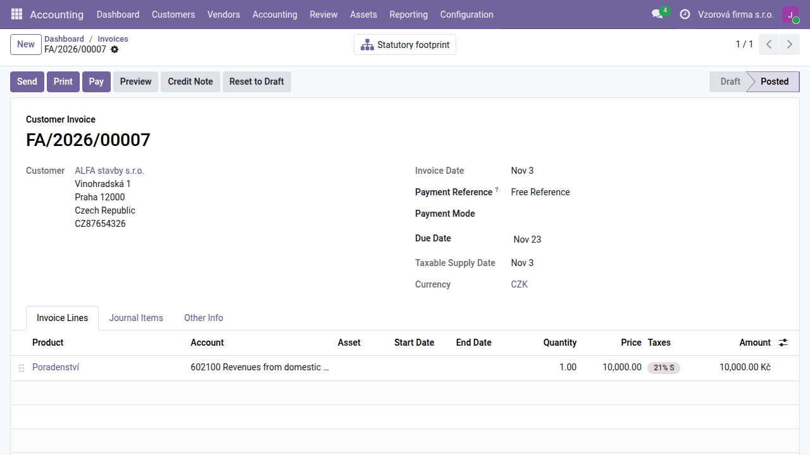
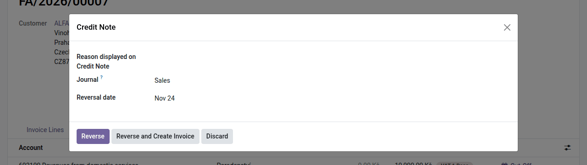
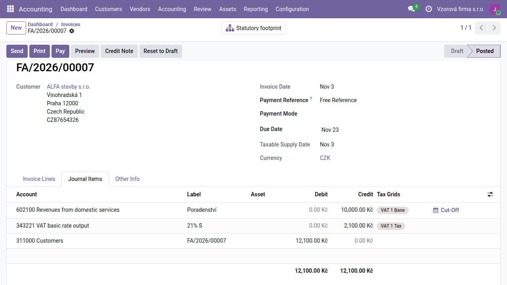

Task guide
Daily bookkeeping
Issued and received invoices, credit notes, advance invoices, payments and internal documents — how each is made in Odoo, how it is posted, and what the Czech localization adds to it.
What this guide is for
The documents of every day, one by one: what to click, which fields matter for Czech bookkeeping and VAT, what happens when you confirm, and which accounts the document is posted to. For the words themselves — journal entry, journal item, journal — see Odoo for a Czech accountant.
The postings are shown for 10,000 Kč net at 21 % VAT, on the accounts Odoo uses right after the Czech localization is installed. Where each account comes from, and how to set it up so that every document is posted correctly without anyone touching it, is in Setting up account assignment.
Issued invoice
Accounting → Customers → Invoices → New:
- Customer. A company customer needs its IČO (Company ID) and DIČ
(Tax ID) on the contact — they print on the invoice, and the kontrolní
hlášení identifies the customer by the DIČ. A partner the public register
shows as dissolved or suspended is flagged
(
l10n_cz_trade_registry). - Invoice Date (datum vystavení), Taxable Supply Date (DUZP) and Payment Terms or a Due Date. The přiznání k DPH and the kontrolní hlášení take the period from the taxable supply date, and the accounting date follows it. A new invoice has today's date in it: change it when the supply took place on another day.
- Invoice lines: product or description, quantity, price, Taxes. The account comes from the product, and the customer's fiscal position (domestic, EU, outside the EU) changes taxes and accounts where needed — what fiscal positions are.
- Confirm. The invoice gets its number, and the Variable Symbol is filled from it (tab Other Info, with the constant and specific symbols).

Send or Print gives the Czech daňový doklad: IČO and DIČ of both
sides, the DUZP, the payment symbols, and the statutory phrase for an exempt
supply or a reverse charge („daň odvede zákazník“). A phrase the localization
does not print by itself — a contract reference, a special regime — goes into
Invoice Legal Note (manual) on the Invoice Lines tab. Details:
l10n_cz_invoice.
Posting (domestic, 21 %):
| Account | Debit | Credit | From |
|---|---|---|---|
| 311000 Customers | 12,100 | the customer's Account Receivable | |
| 604000 Sales of goods | 10,000 | the Income Account of the product, its category or the company | |
| 343221 VAT basic rate output | 2,100 | the 21% G tax |
The income line carries the tax grid VAT 1 Base, the VAT line VAT 1 Tax — row 1 of the VAT return. Out of the box every sale goes to 604000 — services too. Revenue from services (602) and own products (601) is set up on the product category: Setting up account assignment.
An invoice to an EU customer with a VAT number is posted without VAT, with the tax 0% EU G (grid VAT 20) or 0% EU S (VAT 21), and its goods revenue goes to 604200 instead of 604000.
Credit note
On a confirmed invoice, Credit Note asks for the Reason displayed on Credit Note and the Reversal Date:
- Reverse creates a credit note for the whole invoice and reconciles the two — the invoice is then settled.
- Reverse and Create Invoice does the same and opens a new draft invoice, for a correction that replaces the original.

For a partial correction (a discount, returned goods), create the credit note with Reverse, reset it to draft, change its lines, and confirm it again. Check the credit note's Taxable Supply Date before confirming: it decides the VAT period of the correction.
A cash discount (skonto) for early payment is settled by a credit note too: do not use the early payment discount of Odoo's payment terms — see Setting up account assignment.
In VAT terms the credit note is the opravný daňový doklad: it carries the reason and refers to the original invoice.
Posting. The Czech localization turns on Storno Accounting, so a credit note is posted on the same sides as the invoice, with negative amounts (storno minusem):
| Account | Debit | Credit |
|---|---|---|
| 311000 Customers | −12,100 | |
| 604000 Sales of goods | −10,000 | |
| 343221 VAT basic rate output | −2,100 |
The account turnovers then show the real revenue, not revenue inflated by credit notes on the opposite side. In the VAT return the credit note lowers the same rows the invoice filled (row 1 here).
A correction of tax on an unrecoverable receivable is not an ordinary
credit note: mark it in the field Oprava u nedobytné pohledávky on the
Other Info tab, and it is reported on row 33 or 34 of the return and in the
kontrolní hlášení whatever its amount
(l10n_cz_statutory).
Received bill
Accounting → Vendors → Bills → New:
- Vendor, and the Bill Reference — the supplier's invoice number, which the kontrolní hlášení reports in section B.2. The Variable Symbol is taken from its digits; overwrite it if the supplier asks for another.
- Bill Date, Accounting Date and Taxable Supply Date — pre-filled with today's date; enter the DUZP from the supplier's document.
- Lines and taxes as on an issued invoice; an EU supplier gets self-assessed taxes through its fiscal position. Domestic reverse charge (§ 92a) is decided by the tax on the product, not by the fiscal position.
- Confirm.
What the localization adds on a bill:
- Supplier Reliability and Bank Account Check — when the bill is
posted, the Financial Administration's register is asked whether the
supplier is a nespolehlivý plátce and whether the Recipient Bank account
is one of its published accounts. The answer stays on the bill; a risk
shows a warning and never blocks you. See
l10n_cssk_payment_reliability. - A warning when the public register shows the supplier as dissolved or
suspended —
l10n_cz_trade_registry.
On an issued invoice, a warning also appears when a domestic reverse charge
is aimed at a customer who is not a plátce
(l10n_cz_vat_registration).
Posting (domestic, 21 %):
| Account | Debit | Credit | From |
|---|---|---|---|
| 504000 Goods sold | 10,000 | the Expense Account of the product, its category or the company | |
| 343121 VAT basic rate input | 2,100 | the 21% G tax | |
| 321000 Suppliers | 12,100 | the vendor's Account Payable |
The lines carry the grids VAT 40 Base and VAT 40 Total — row 40 of the VAT return. Out of the box every purchase goes to 504000 — services, energy and material too. A line without a product gets the account used most often with this vendor, and only then 504000. How to set it up: Setting up account assignment.
For a service from an EU supplier, the Intra-Community fiscal position swaps the tax for a self-assessed one, and the VAT is posted to both VAT accounts:
| Account | Debit | Credit |
|---|---|---|
| 518000 Other services | 10,000 | |
| 343121 VAT basic rate input | 2,100 | |
| 343221 VAT basic rate output | 2,100 | |
| 321000 Suppliers | 10,000 |
The return reports it on row 5 (tax due) and row 43 (deduction). Whether it is a service or an acquisition of goods — and so which rows — is decided by the product's tax (21% S for services, 21% G for goods): Setting up account assignment.
To claim the deduction in a later period than the one the bill is posted in,
fill in VAT period declared on the bill
(l10n_cssk_core).
Advance invoices
A Czech advance is three documents, and only the last two are booked:
- The advance invoice (zálohová faktura) — a request for payment. On a confirmed sales order, Create Advance Invoice: the full amount, a percentage or a fixed amount. It is numbered ADV00001…, prints with the payment details, and is not posted.
- The tax document for the payment received (daňový doklad k přijaté platbě). When the money arrives — Register Payment on the advance, or matched from the bank — the advance shows Create Invoice; the tax document goes to the journal Tax Documents for Received Advance Payments and to the received-advances account (324). VAT is due from the day of payment.
- The final invoice (vyúčtovací faktura). Invoice the order as usual: every paid advance is deducted on its own negative line, with the VAT already declared on it, so the VAT is paid once.
Advances paid to suppliers work the same way from a purchase order, and a
bill is settled with Deduct Advance Invoices. Details, including advances
without an order and long-term advances:
sale_order_advance_invoice and
purchase_order_advance_invoice.
Posting of a received advance of 12,100 Kč (10,000 Kč + 21 % VAT):
| Document | Account | Debit | Credit |
|---|---|---|---|
| Payment | 221 Bank (for a manually registered payment, 221002 Outstanding Receipts) | 12,100 | |
| 324001 Advances received – clearing (tax document) | 12,100 | ||
| Tax document for the payment | 324001 Advances received – clearing (tax document) | 12,100 | |
| 324000 Operating advances received | 10,000 | ||
| 343221 VAT basic rate output | 2,100 | ||
| Final invoice | 604000 Sales of goods | 10,000 | |
| 324000 Operating advances received | −10,000 | ||
| 311000 Customers | 0 |
On 324001 the payment meets its tax document and the two are reconciled. 324000 holds the advance net of VAT until the final invoice settles it; on the final invoice the VAT of the supply and the VAT already declared on the advance cancel out, so no VAT is charged twice. With a partial advance, the balance due stays on 311000. A long-term advance goes to 475000 instead of 324000. Advances paid to suppliers are posted the mirror way through 314001 and 314000.
Payments
Pay on a confirmed invoice or bill records a payment: Journal (bank or cash), Amount, Payment Date, Memo, then Create Payment. The invoice is marked paid and reconciled with it. A payment arriving through the bank is matched from the bank statement instead — Bank accounts.
Posting. A payment registered by hand is not yet a movement on the bank account, so it goes through an interim sub-account of the bank accounts:
| Document | Account | Debit | Credit |
|---|---|---|---|
| Customer payment | 221002 Outstanding Receipts | 12,100 | |
| 311000 Customers | 12,100 | ||
| Vendor payment | 321000 Suppliers | 12,100 | |
| 221003 Outstanding Payments | 12,100 |
When the bank statement arrives, its line is matched with the payment: 221001 Bank against 221002 or 221003, which clears them. If you do not register the payment and match the statement line straight to the invoice, it is 221001 against 311000 or 321000 directly. The balance of 221002 and 221003 is therefore the payments not yet on a statement.
Internal document
An entry with no external document behind it — an accrual, a transfer, a correction — is an interní doklad:
- Accounting → Accounting → Transactions → Journal Entries → New, journal Miscellaneous Operations (in Czech Ostatní účetní operace).
- A Reference describing the case, the Accounting Date, and the lines: account, Label, debit or credit.
- Post, then print it from the gear menu: ⚙ → Print → Interní / interný doklad. It carries the particulars § 11 of the Accounting Act asks of an accounting document and lines for the signatures.
Here the accounts are typed by hand — the internal document is the only one of these where you choose the account.
For recurring patterns — money in transit through 261, transferring the
approved result — Accounting → Accounting → Create Entry from Template
turns one amount into a balanced draft:
l10n_cz_account_move_template.
Check before you confirm
The Journal Items tab of an invoice shows, already in draft, exactly the lines that will be posted — accounts, debit and credit sides, and tax grids. Until the account assignment is set up, it is the quickest check that a service is not going to 604000 and an energy bill to 504000.
